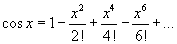
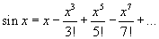
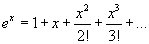
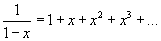

This device cannot display Java animations. The above is a substitute static image
1. For a cosine function
The applet shows the 2nd degree Taylor polynomial for cos (x). The cosine is graphed in magenta, while the Taylor polynomial is graphed in blue. Move the nmax slider to increase the degree of the polynomial to see that the polynomial becomes a better and better approximation of the function as the degree increases. You can also move the c slider to see what happens if you move the center point of the series. When c = 0 we have the Maclaurin series

We can use a limited number of terms of this series to calculate values for cosine using only addition, subtraction, multiplication and division. If you move the
x slider, the black point moves along the polynomial curve and the top left corner of the graph shows the value of
f, the value of the polynomial, and the error (i.e., the absolute value of the difference).
2. For a sine function
Select the second example from the drop down menu, showing the 3rd degree Taylor polynomial for
sin(x). The Maclaurin series is

You can move the
nmax slider to see that higher degree polynomials give more accurate approximations.
3. For an exponential function
Select the third example, showing the exponential function. Here the Maclaurin series is

4. With limited convergence
Select the fourth example, showing the function 1/(1 - x). Note that in this case, the interval of convergence is not all real numbers but is limited to a radius of 1. The Maclaurin series is

which is a geometric series. Move the
nmax slider to see the interval of convergence get smaller. For this example, the
nmax slider is limited to 6 at the high end. For functions where the derivative doesn't get more complex (like sine and cosine), you can make
nmax as big as you like.
For functions where the successive derivatives get more complex (like 1/(1-x), tan x, etc.), the software quickly gets bogged down trying to evaluate the higher order derivatives. Hence for these types of functions, it is best to limit nmax to no more than 6.
Note also that this series only approximates the left-hand part of the hyperbola. If you want to approximate the right-hand part of the hyperbola, you will need to make c > 1.
Explore
You can try graphing your own Taylor polynomials by just typing in a function for f and setting c. Remember not to set nmax > 6 if the function's higher order derivatives get more complex. You might try f (x) = ln(x), or try a polynomial function, like f (x) = x² - x - 1. For the logarithm, what do you need to do with c? For the polynomial, does nmax make a difference? Does c?
Other 'Definite Integral' topics
(C) 2011 Copyright Math Open Reference.
All rights reserved